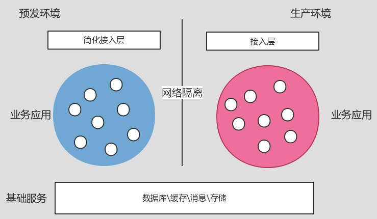
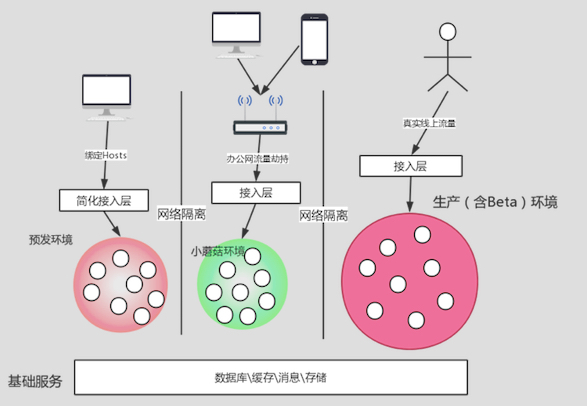

- 00 开篇词 带给你不一样的运维思考.md.html
- 01 为什么Netflix没有运维岗位？.md.html
- 02 微服务架构时代，运维体系建设为什么要以应用为核心？.md.html
- 03 标准化体系建设（上）：如何建立应用标准化体系和模型？.md.html
- 04 标准化体系建设（下）：如何建立基础架构标准化及服务化体系？.md.html
- 05 如何从生命周期的视角看待应用运维体系建设？.md.html
- 06 聊聊CMDB的前世今生.md.html
- 07 有了CMDB，为什么还需要应用配置管理？.md.html
- 08 如何在CMDB中落地应用的概念？.md.html
- 09 如何打造运维组织架构？.md.html
- 10 谷歌SRE运维模式解读.md.html
- 11 从谷歌CRE谈起，运维如何培养服务意识？.md.html
- 12 持续交付知易行难，想做成这事你要理解这几个关键点.md.html
- 13 持续交付的第一关键点：配置管理.md.html
- 14 如何做好持续交付中的多环境配置管理？.md.html
- 15 开发和测试争抢环境？是时候进行多环境建设了.md.html
- 16 线上环境建设，要扛得住真刀真枪的考验.md.html
- 17 人多力量大vs.两个披萨原则，聊聊持续交付中的流水线模式.md.html
- 18 持续交付流水线软件构建难吗？有哪些关键问题？.md.html
- 19 持续交付中流水线构建完成后就大功告成了吗？别忘了质量保障.md.html
- 20 做持续交付概念重要还是场景重要？看笨办法如何找到最佳方案.md.html
- 21 极端业务场景下，我们应该如何做好稳定性保障？.md.html
- 22 稳定性实践：容量规划之业务场景分析.md.html
- 23 稳定性实践：容量规划之压测系统建设.md.html
- 24 稳定性实践：限流降级.md.html
- 25 稳定性实践：开关和预案.md.html
- 26 稳定性实践：全链路跟踪系统，技术运营能力的体现.md.html
- 27 故障管理：谈谈我对故障的理解.md.html
- 28 故障管理：故障定级和定责.md.html
- 29 故障管理：鼓励做事，而不是处罚错误.md.html
- 30 故障管理：故障应急和故障复盘.md.html
- 31 唇亡齿寒，运维与安全.md.html
- 32 为什么蘑菇街会选择上云？是被动选择还是主动出击？.md.html
- 33 为什么混合云是未来云计算的主流形态？.md.html
- 35 以绝对优势立足：从CDN和云存储来聊聊云生态的崛起.md.html
- 36 量体裁衣方得最优解：聊聊页面静态化架构和二级CDN建设.md.html
- 37 云计算时代，我们所说的弹性伸缩，弹的到底是什么？.md.html
- 38 我是如何走上运维岗位的？.md.html
- 39 云计算和AI时代，运维应该如何做好转型？.md.html
- 40 运维需要懂产品和运营吗？.md.html
- 41 冷静下来想想，员工离职这事真能防得住吗？.md.html
- 42 树立个人品牌意识：从背景调查谈谈职业口碑的重要性.md.html
- 划重点：赵成的运维体系管理课精华（一）.md.html
- 划重点：赵成的运维体系管理课精华（三）.md.html
- 划重点：赵成的运维体系管理课精华（二）.md.html
- 新书 《进化：运维技术变革与实践探索》.md.html
- 特别放送 我的2019：收获，静静等待.md.html
- 结束语 学习的过程，多些耐心和脚踏实地.md.html
- 捐赠
16 线上环境建设，要扛得住真刀真枪的考验
前面几期我们分享了一些线下环境建设方面的内容，我们可以感受到，整个线下环境的建设是比较复杂的，那经过线下环境的验证，是不是就可以直接发布到线上生产环境了呢？答案同样是否定的，由线下正式交付到线上之前，我们仍然会做很多的验证和稳定性保障工作。
今天我们就一起来看一下线上环境是如何建设的。
下面，我们就生产环境、Beta环境、预发环境、办公网生产环境这四种线上环境分别展开讨论。
生产环境
我们还是进入到现实场景中。最初我们的软件代码开发完成后，就可以发布到生产环境，也就是可以正式接入用户流量，承载真实的业务场景。
在最早期，我们业务复杂度不高，用户量不大，集群规模小，软件架构也相对简单。在这种情况下，其实这一个环境就足够了，真有问题，也可以快速回退掉。退一步讲，即使有问题也回退不了的话，影响范围也有限。
所以，这个时候，线上环境=生产环境。
我们知道，随着业务量增大和业务复杂度升高，我们的软件架构、部署模式、集群规模等等也相应变得复杂和庞大起来。同时，业务产品在用户和业界的影响力也在变得越来越大。
这个时候，任何一个小的变更或一个不起眼的小问题，都有可能导致非常严重的故障，从而造成公司资损甚至是恶劣的产品口碑影响。
比如，我们假想一下，如果国内某个大型电商平台不可用，或者某即时通讯软件不可用，会造成何等严重的后果，就不难想象了。
所以，这时就需要我们非常严肃而谨慎地应对生产环境的变更。
我想你可能跟我一样，会想到一个问题：就是我们不是已经在线下环境经过了很多轮不同形式的验证测试环节，为什么到了生产环境还会有验证不到的严重问题？
这里涉及一个用户和业务场景的概念，就是线下和线上的用户场景是完全不同的：线下是我们模拟出来的，线上却是真实的用户场景，这两者之间会存在巨大的差异，有差异，系统的表现状况就会不一样。
所以线下我们只能尽可能地确保业务功能和业务流程是正常的，但是没法百分之百模拟线上场景，特别是一些异常特殊场景方面。这一点后面的文章我们还会再分享，这篇文章我们只要知道存在差异即可。
这个时候，我们的第一个思路就是：即使有影响，也要把它控制在小范围内，或者是在萌芽状态时就发现。这样就可以提前处理，而不是全量发布到生产环境后才发现问题，影响全局。
所以，线上的第二个环境，Beta环境就产生了。这个环境也可以叫作灰度环境，包括我们常提到的金丝雀发布，也是基于这个环境的发布模式。
Beta环境
这个环境的建设，我们简单理解，就是从生产环境的集群中，再建立一个独立集群。看过我们之前介绍CMDB应用和服务分组的文章的读者应该不难理解，针对应用，就是再建立一个分组，独立出一个集群出来，但是这个集群中服务器数量1-2台即可，主要还是针对小规模真实业务流量。如何做到小规模呢？这就要在负载均衡策略上做工作了，主要两种方式：
- 调用RPC，在服务化框架的复杂均衡策略中，将其权重或者流量配比降低；
- 调用HTTP，在四层VIP或者七层权重上，将权重降低。
这个环境同样不会全量建设，通常只针对核心应用，比如交易链路上的各个应用。同时，除了承担的流量比重不同外，其他与生产环境的应用没有任何差别。
后面的部署发布环节，我们会看到，针对核心应用，必须要经过Beta发布环节，才允许正式发布到生产环境。
有了Beta环境之后，上面说到的影响范围的问题从一定程度上就可控了。但是在Beta环境上我们仍然会有两个问题无法很好的解决：
- 影响范围再可控，其实也已经影响到了部分真实用户，特别是当访问量特别大的时候，即使是千分之一、万分之一，也是不小的数量。
- 之前经历的线下环境毕竟是一个模拟环境，一方面，在数据规模、分布特点、多样性以及真实性方面，跟生产环境的数据场景还是会有很大的区别，所以有很多跟业务逻辑相关性不大，但是跟数据相关性特别强的场景功能，在线下环境就很难验证出来；另一方面，对于一些第三方的系统，特别是商家、支付和物流这样的体系，在线下环境极有可能是Mock出来的，所以验证的时候并不能代表真实场景，但是等到了线上再去发现问题，就可能就会造成真实的业务影响。业务访问失败可以重试，但是造成商家真实的销售数据错误，或者用户真实的支付资金错误，这样就会非常麻烦了。所以，从线下直接进入Beta环境，还是会给生产环境，特别是数据层面造成影响。
当业务复杂度和系统规模发展到一定程度后，上面两个问题就会非常突出，所以单纯的Beta环境是无法满足要求的。
这时，线上第三套环境，预发环境，就产生了。
预发环境
预发环境在建设上，有以下几个规则要求：
- 状态基础服务共用，如DB、KV、文件存储以及搜索类的数据服务。这里基本就是真实的生产环境的基础了，我们上述的问题在这个基础上就可以很好地解决了。除有状态服务外，其他都需要在预发环境上进行全套建设，但是资源使用上，一般是一个应用部署一个实例即可，所以规模比生产环境要小很多。
- 网络隔离上，预发环境做独立网段的划分，不承担线上真实流量，独占一个B段，同时在网络上进行逻辑隔离。业务调用必须本环境内闭环，预发不允许跨环境进行应用服务调用，如预发应用调用生产环境应用，反之亦然。
- 要保证一定的稳定性。预发环节就是基于线上真实环境进行功能和业务流程的最终验证，所以对于版本质量要求是要高于线下环境，所以不允许反复频繁地变更部署，出现异常或警告也必须要以较高优先级处理。
上述环境的搭建，使用的技术方案，跟我们上篇文章讲到的方案是通用的，如服务单元化调用、绑定hosts以及网络策略隔离等等。预发环境与生产环境的关系如下图：

预发环境正式使用后的另一用途，就是在生产环境出现问题，但是线下复现不了时，就可以在预发环境上复现，这样对于问题定位会带来很大帮助。如果是在生产环境上做调试和问题定位，有时候会影响到正常用户访问，但是预发环境的影响就可控一些。
不过，定位问题可以，但是绝对不可以通过预发环境去做下面两件事：
- 与数据订正和变更相关的事情。因为这是由业务流程触发，而不应该由调测触发。而且要时刻牢记，在这个环境做的任何事情都是会对生产环境产生直接影响的，所以这里必要要靠强调意识、事先培训等方式进行避免。
- 阻塞他人工作。在定位问题的过程中，如果发现有其他应用依赖，这时要停下来，优先保证环境稳定性，而不是阻塞依赖方发布前的准备工作。
形象一点描述，预发环境就像是球类运动员，他们平时可以在训练场进行训练，但是正式比赛前，一定是要到正式比赛场地提前适应场地或者热身。一方面是为了了解现场的实际情况，做针对性的准备和调整；另一方面也是为了调动赛前兴奋度和氛围。
预发环境搭投入使用之后，有很多问题在这个阶段被发现，而且是开发和测试同学目前强依赖的一个环境，所以确实进一步保障了业务的稳定性。
然而，在这个环境中仍然存在一个问题。下面我还是以电商为例。
电商每年大促，一般都是提前几个月准备，有可能开发团队在大促活动正式开始前3-4周左右，业务功能都已经开发完成，但是这个时候是不能上线的，或者上线了也要有入口开关控制，绝对不能让用户流量提前进来。
与此同时，运营侧的招商、报名以及商品上架这些工作也会提前完成，所以这时线上实际已经具备了真实的大促环境，只是因为时间点不到，暂时只能等着。
但是，如果有一个只让员工访问，让员工们体验和反馈问题的环境，那么，在这个阶段我们是可以提前暴露很多问题，并进行很多优化改进的。这样做就更进一步保障了大促的系统问题和用户体验。
不过，上述Beta环境和生产环境是无法满足要求的。预发环境能满足一部分要求，但是因为这个环境主要还是供开发和测试验证功能使用，在访问的便捷性和功能体验方面，不能完全保证达到真实用户访问的要求和体验。
为了满足上述需求，我们会再单独建设一个环境出来，于是，线上环境的第四套环境，办公网生产环境，就应运而生了。
办公网生产环境
办公网生产环境建设的技术方案与预发环境一致，但是在要求上又有所不同：
- 访问用户是办公网内的员工用户，所以必须连接指定的办公网wifi接入点。于是，员工会通过wifi被劫持到这个环境上，这时用户就可以在这个环境中提前体验新版本软件的功能，比如我们之前说的大促活动等。
- 稳定性要求上，办公网生产环境相当于生产环境，虽然不是外部用户访问，但是一个公司内的员工也算是真实用户了，他们发现的问题等同于线上问题，但是级别上会降低一级处理。
- 建设规模上，公司有上千、上万名员工，他们的频繁访问行为，也产生一定的业务量，所以综合上述稳定性要求，办公网生产环境在规模上会根据应用容量进行相应的资源分配，这里至少每个应用应该以两个实例做冗余。
所以这个环境，从建设规模和稳定性要求上，就相当于一个小号的生产环境，所以我们内部又把它简称为“小蘑菇”环境。
总结
我们简单构建一张模型图来对线上环境作个展示：

我在这两期文章中介绍了这么多环境，我们可以看到，环境建设是一项异常繁琐复杂的工作，这些工作不是一蹴而就，而是根据实际的场景和问题催生出来的，所以是个逐步渐进的过程。
而且，因为不同的业务类型和场景，以及业务发展的不同阶段，场景和问题可能都是不一样的，而且其建设需求也不一样，所以在实际操作中，一定要切合具体情况进行建设。
再就是，环境管理是复杂的，多一个环境就多一份管理成本。所以环境并不是越多越好，反而是越精简越好。这个时候也需要各位读者能够有一定的ROI评估，毕竟能带来最大价值的投入才是有意义的，而不是盲目地建设和投入。
最后，给你留几个问题思考：
- 我们分别介绍了线下环境和线上环境的建设，这两个环境在持续交付体系中，分别对应哪些理念和指导思想？
- 我们建设了这么多的环境，都是为了解决不同场景下的问题，那么还有哪些问题是上述这些环境仍然解决不了的？
欢迎你留言与我讨论。
如果今天的内容对你有帮助，也欢迎你分享给身边的朋友，我们下期见！
© 2019 - 2023 Liangliang Lee. Powered by gin and hexo-theme-book.